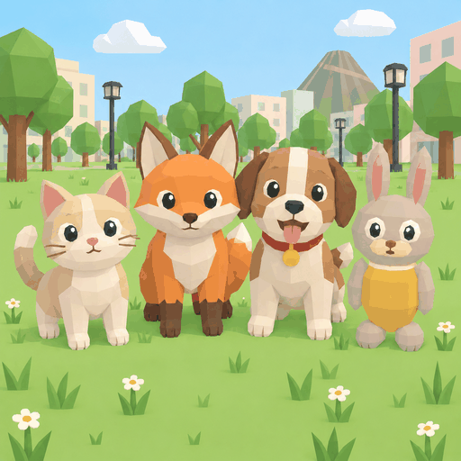

Eine Welt zum Erkunden
Besuche die Stadt und das Dorf, erkunde den Berg oder fahre zur Perleninsel. Die Inselkarte hilft dir, Jobs und Gebäude zu finden. Mit einem Rechtsklick planst du eine Route; ein weiterer Rechtsklick entfernt sie.

Animal WorldJetzt spielen →DEINE INSEL. DEIN TIER. DEIN ABENTEUER.
Ein kostenloses 3D-Browserspiel, in dem du als Tier eine Inselwelt erkundest, Jobs erledigst, Fahrzeuge ausprobierst und dein eigenes Zuhause findest.
Wähle eine Katze, einen Hasen, einen Bären oder einen Fuchs und gib deiner Figur einen Namen. Du kannst direkt im Browser losspielen – eine zusätzliche Spielinstallation ist nicht nötig.
Dein Abenteuer starten →Besuche die Stadt und das Dorf, erkunde den Berg oder fahre zur Perleninsel. Die Inselkarte hilft dir, Jobs und Gebäude zu finden. Mit einem Rechtsklick planst du eine Route; ein weiterer Rechtsklick entfernt sie.
Liefere Pakete aus, bringe Taxifahrgäste ans Ziel, gehe angeln oder kümmere dich um den Garten. Weitere Aufgaben sind Reinigung, Reparaturen, Obsternte und Bergkontrolle. Mit verdientem Spielgeld kaufst du Kleidung und ein Zuhause.
Rufe Autos an Telefonzellen. An passenden Spawnpunkten warten außerdem Boote, Flugzeuge und Helikopter. Erkunde damit neue Ecken der Inselwelt. Oder fahre kostenlos mit vier Buslinien: Stadt und Flugplatz, Obstgarten und Osthafen sowie zwei Linien auf der Perleninsel mit Anschluss zum Perlenflugplatz. Warte am H-Schild und laufe an der Haltestelle durch die offene Tür hinein oder hinaus. Die Busse fahren automatisch.
Häuser und Wohnungen haben unterschiedlich große Innenräume mit Wohnbereichen, Küche, Bad und Bett. In Wohnhäusern erreichst du die Etagen über eine begehbare Wendeltreppe. Nachts kannst du schlafen.
Mit Offline spielen startest du im Einzelspielermodus. Mit Online spielen triffst du andere Spieler auf der gemeinsamen Insel. Für den Online-Modus brauchst du eine Internetverbindung. Gemeinsam überspringt ihr die Nacht, wenn alle schlafen. Jede Online-Wohnung kann nur einen Eigentümer haben.
Der Einzelspielermodus verwendet lokalen Browserspeicher für deinen Fortschritt. Wenn du die Website-Daten löschst oder den Browser wechselst, steht dieser lokale Spielstand dort nicht mehr zur Verfügung.
Auf Touchscreens erscheinen ein Joystick und passende Aktionstasten. Die Kamera folgt deiner Figur.
Ja. Du spielst kostenlos im Browser. Münzen für Kleidung und Häuser verdienst du durch Aufgaben im Spiel.
Du brauchst keine zusätzliche App. Öffne die Website in einem Browser mit JavaScript und WebGL. Beim Laden werden die Spieldateien heruntergeladen.
Das Spiel bietet eine Touch-Steuerung. Wie flüssig die 3D-Welt läuft, hängt von deinem Gerät und Browser ab.
Animal World wird weiterentwickelt. Inhalte und Spielmechaniken können sich mit Updates verändern.
Animal World spielen →